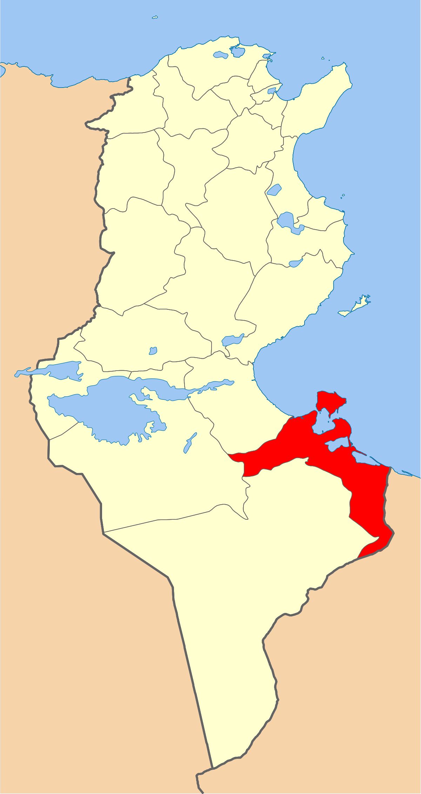
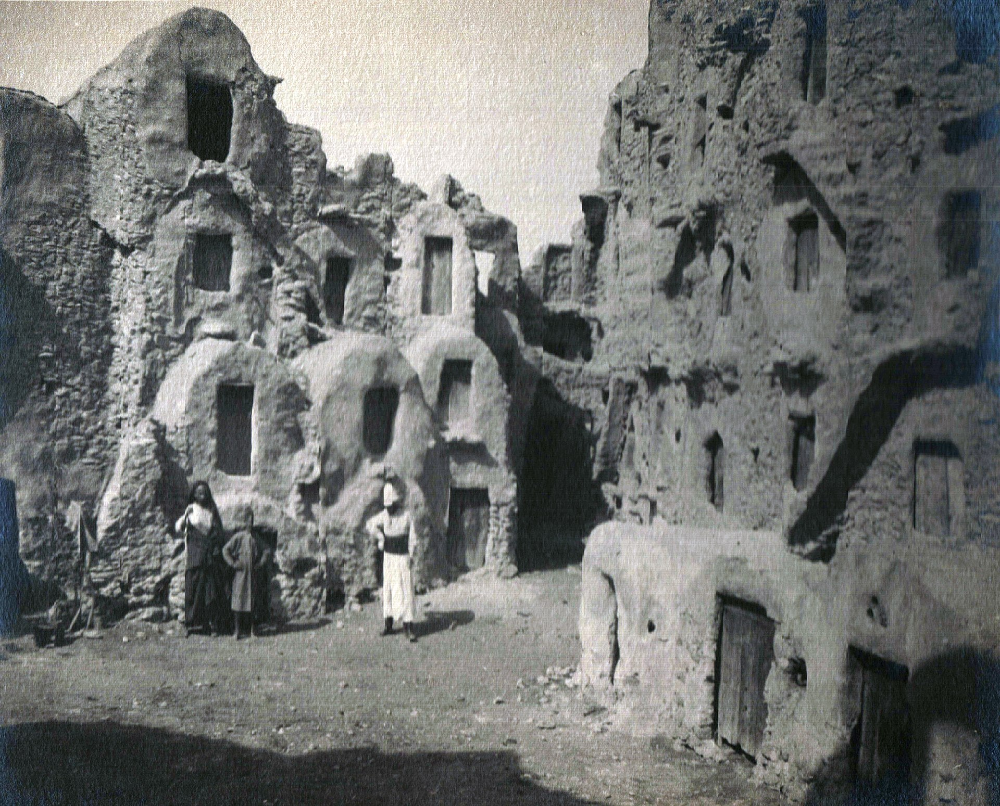
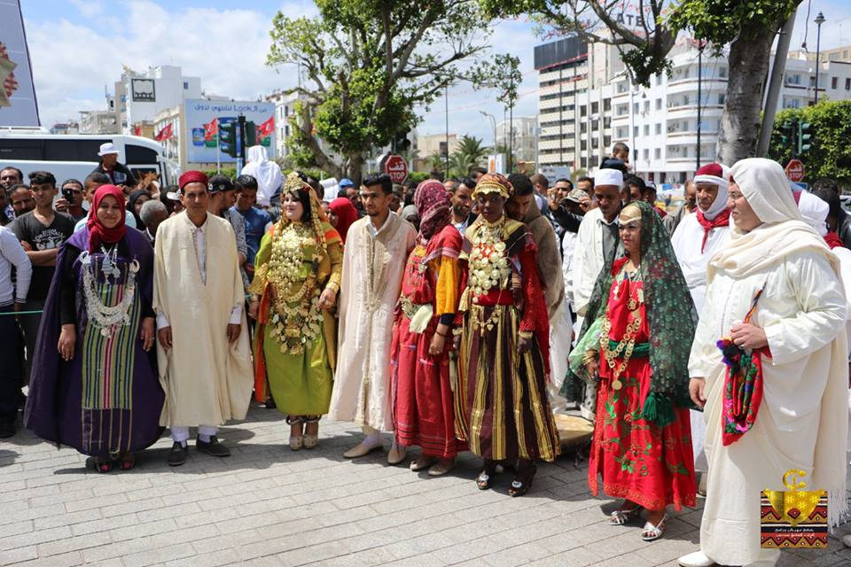
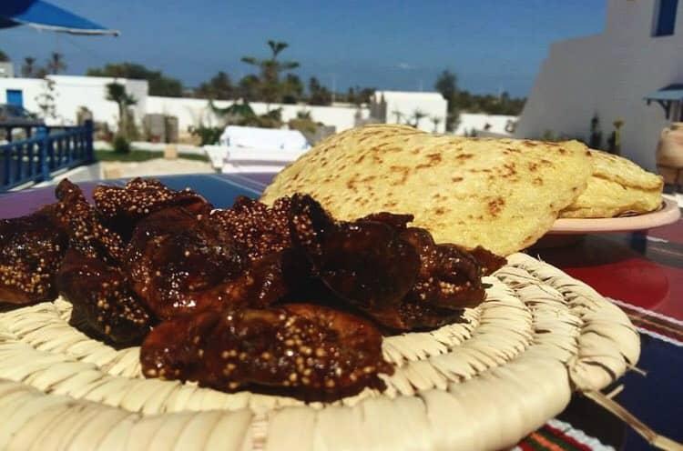
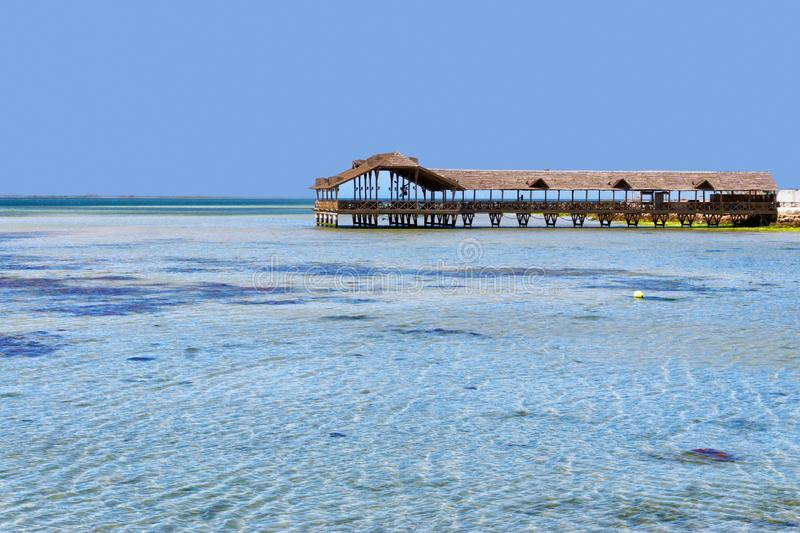
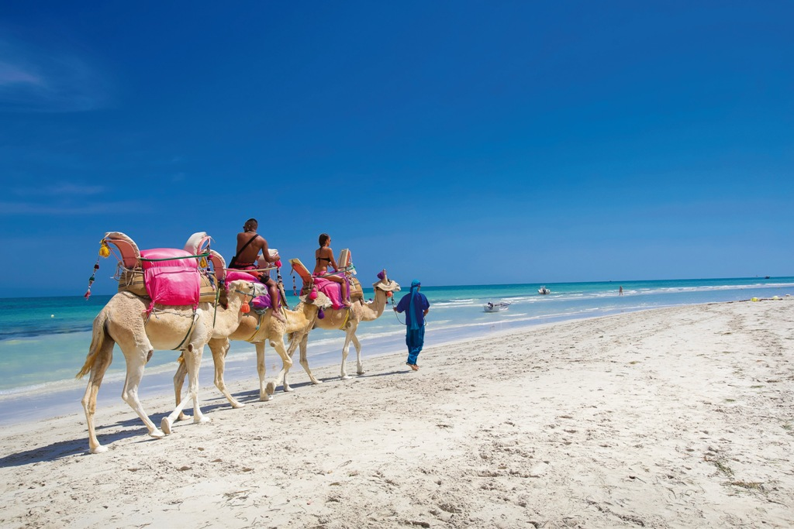

Medenine
Situé au Sud-Est de la Tunisie, le Gouvernorat de Médenine occupe une position stratégique au milieu du bassin méditerranéen. Il est limité par le Gouvernorat de Gabès et la mer Méditerranée au Nord, de Tataouine au Sud, de la Libye et la mer Méditerranée à l'Est, ainsi que de Kebili à l'Ouest. Sa situation géographique privilégiée lui accorde un statut de proximité tout à fait exceptionnel. L'île de Djerba la douce, qui est une des délégations de Médenine, a permis à la région d'être un pôle touristique de renommée internationale.
El Ghriba synagogue
Djerbahood
Musée de Guallala
Plage de Seguia
Quelques chiffres
Superficie
9 167 Km²
Nombre de maisons
62 000
Habitants
479 520
Localisation
Elle occupe une position centrale dans le sud-est tunisien car se trouvant à 75 kilomètres au sud de Gabès, 78 kilomètres à l'ouest de Ben Gardane et une cinquantaine de kilomètres au nord de Tataouine ; la capitale Tunis se trouve à 482 kilomètres au nord. Le territoire de la ville de Médenine est délimité par le gouvernorat de Gabès, Sidi Makhlouf et la mer Méditerranée au nord, Beni Khedache à l'ouest, Ben Gardane à l'est et le gouvernorat de Tataouine au sud. Djerba, ou Jerba, est une île tunisienne de 514 km2 (25 kilomètres sur 20) et bordée de 125 kilomètres de côtes, située au sud-est de la Tunisie, dans le golfe de Gabès (ou petite Syrte). La plus grande ville de l'île est Houmt Souk. Elle se trouve à environ 50 kilomètres au nord de la ville de Médenine (entre les péninsules de Jorf et de Zarzis). L'île appartient au gouvernorat de Médenine. Elle est séparée du continent par un bras de mer, le canal d’Ajim, large de 2 kilomètres seulement.

Histoire
On peut y trouver des ksour et des ensembles de greniers à provisions de forme demi-cylindrique appelés ghorfas ; les premiers d'entre eux ont été construits vers le xviie siècle. En 1893, on dénombre 35 ksours et 6 000 ghorfas. Ces ksour de plaine se sont ensuite progressivement transformés en un centre urbain. À partir de 1897, le caïdat de la tribu des Ouerghemma s'installe à Médenine et a sous son autorité les populations des régions de Médenine, Ben Gardane et Zarzis, mais aussi celles de la région de Tataouine jusqu'à la création du caïdat des Ouadernas en 1957. Médenine est également le siège du commandement militaire des territoires du Sud sous le protectorat français, d'un bureau des affaires indigènes responsable de ces territoires et d'un cercle militaire.

Culture

hover me
hover me
hover me
hover me